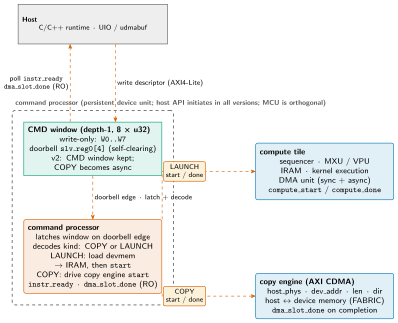
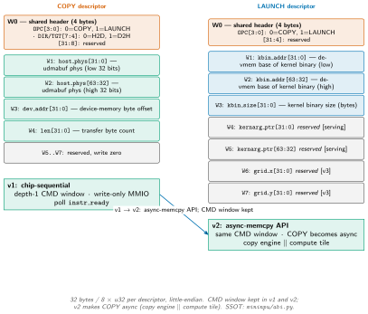

mininpu: Control Plane¶
Status. DECIDED (this doc): the command_processor.sv factoring, COPY/LAUNCH descriptor kinds and v1 active fields, the concrete descriptor byte-offset map (32 bytes / 8×u32, W0..W7), the kernarg_ptr and grid fields as reserved for [serving]/[v3], the IRAM-load-from-devmem RTL requirement, the ABI 7→8 cutover, and the function-named interfaces (LAUNCH / COPY / DMEM / FABRIC). OPEN: the device/compiler kernarg-buffer layout ([serving]) is opaque to this device.
The control plane is the device-side front-end that translates host commands into tile actions. It is realized by a persistent hardware module, command_processor.sv, which absorbs all of the today-scattered command-handling logic. The host API initiates every command (kernel launches and host↔device memcpys) through the command processor in all versions, using the same write-only CMD window and self-clearing doorbell over AXI4-Lite. v1 is single-tile, chip-level sequential (charter §4): the host issues one command at a time (COPY then LAUNCH). Within-tile async DMA with dma_slot_done and flush.slot is a v1 feature (the copy engine and compute tile do not overlap at the chip level in v1; the FABRIC interface is single-master). v2 adds chip-level concurrency: the copy engine runs concurrently with the compute tile (the async-memcpy API: COPY does not block a concurrent LAUNCH). The CMD window is kept; COPY requests become asynchronous. v3 adds multi-tile support with a work distributor. The [serving] tag (KV-cache / paging / FlashAttention) is a capability axis orthogonal to the v1/v2/v3 hardware-scaling axis: these are ISA/ABI-reserved features, not a version number. An on-chip MCU is an orthogonal complexity lever: introduce one when FSM control state warrants simplification, not as a version milestone. This document covers the command path, the two descriptor kinds (COPY and LAUNCH), the concrete descriptor byte-offset map, the completion and backpressure protocol, and the ABI_VERSION 7→8 cutover. It records the industry precedent corpus in the permanent design record. The authoritative register map is mininpu/abi.py (→ regmap_pkg.sv); this document cites it and does not restate it.
Command processor¶
Slide summary (from the deck build)
- Persistent hardware unit:
command_processor.sv(v1/v2/v3). Absorbs: doorbell flop + auto-clear, arbiter/dispatch FSM, compute start/done handshake. DMA/MT sub-FSMs stay in their tiles; CP only drives*_start, consumes*_done. - v1 (single tile, chip-sequential): host API initiates commands via the CP over AXI4-Lite (CMD window + doorbell). Within-tile async DMA already v1. NVDLA / Google TPU v1 precedent: §7.
- v2 (chip-level concurrency): copy engine | compute tile; COPY becomes async (async-memcpy API); CMD window kept. Control MCU: orthogonal option, not the defining feature.
- v3 (multi-tile): work distributor maps commands to multiple compute tiles.
- LAUNCH interface:
start/doneto compute tile. COPY interface:start/doneto copy engine.
The command processor is a persistent device-side hardware unit, factored into its own module command_processor.sv. It absorbs all of the logic that is today scattered across the AXI4-Lite slave: the doorbell flop and auto-clear (npu_slave_axi_lite.v), the arbiter and dispatch always-block (npu.sv lines 344--418: latched_mode, *_running/*_start, the route case, instr_ready_w), and the compute start/done handshake (compute_ctrl.sv). DMA and MT sub-FSMs remain in their own tiles; the CP only drives *_start and consumes *_done.
The host API initiates every command (kernel launches and host↔device memcpys) via the command processor in all versions. The CP module is invariant; what changes across versions is chip-level capability:
- v1 (single tile, chip-sequential): the host C/C++ runtime writes packed descriptors into the CMD window and asserts the doorbell over AXI4-Lite. The chip executes one command at a time (depth-1, host-mediated sequencing). Within-tile async DMA (
dma_slot_done/flush.slot) is already a v1 feature. NVDLA and Google TPU v1 validate this starting point (§7): NVDLA "headless" (a CPU manages the unit over a config bus, double-buffering config to overlap layers); TPU v1 (ISCA 2017: a passive PCIe coprocessor where the host pushes instructions into a FIFO, described as "closer to an FPU coprocessor than a GPU"). - v2 (chip-level concurrency): the copy engine runs concurrently with the compute tile (overlapping memcpy and kernel execution). The CMD window is kept; COPY requests become asynchronous so copy overlaps compute (the async-memcpy API). An on-chip MCU is an orthogonal option: introduce one (PicoRV32 / VexRiscv candidate) when CP control state complexity warrants simplification; the MCU is not what defines v2. Tenstorrent Blackhole illustrates the value of on-chip RISC-V cores for data-movement orchestration at scale; whether to adopt that pattern is a complexity/scalability judgement, not a versioning milestone.
- v3 (multi-tile): a work distributor maps commands to multiple compute tiles, routing a 2D grid of work.
The proposed port list for command_processor.sv:
- AXI4-Lite slave port: the host writes it in all versions (CMD window write, doorbell write,
instr_ready/dma_slot_doneread). If an MCU is added it lives inside the command processor (the FSM is replaced or augmented by the MCU); it does not drive this port from outside. - LAUNCH interface (to compute tile):
compute_start,compute_done(=instr_ready), and the decoded LAUNCH descriptor (kbin_addr[63:0],kbin_size[31:0]). - COPY interface (to host interface / copy engine):
dma_start,dma_done, and the decoded COPY descriptor (host_phys[63:0],dev_addr[31:0],len[31:0],dir[1:0]). - Device memory read port (for IRAM binary load, devmem→IRAM pre-launch).
instr_readyanddma_slot_doneaggregation (from tiles, exposed as RO CSRs over the AXI4-Lite slave).
Command path¶
Slide summary (from the deck build)
- Host writes one encoded descriptor (32 bytes / 8×u32) into the write-only CMD window (
W0..W7), then asserts the doorbell (slv_reg0[4]). - CP latches the entire window atomically on the doorbell edge and decodes: COPY (
OPC=0) or LAUNCH (OPC=1). - LAUNCH: CP loads the kernel binary from device memory into IRAM (devmem→IRAM, always-load in v1, NEW RTL), then pulses
compute_start(LAUNCH interface). - COPY: CP drives the copy engine command port (COPY interface) with {
host_phys,dev_addr,len,dir}. - Completion: poll
instr_ready(all-idle) +dma_slot_done(async DMA). Backpressure: host API returns-EBUSYif not idle.
Slide summary (from the deck build)
Figure: cp-cmdpath

Figure: cp-cmdpath
Command path: the host writes an encoded descriptor into the write-only CMD window (32 bytes / 8×u32, depth-1) and rings the self-clearing doorbell; the command processor (command_processor.sv) latches and decodes on the doorbell edge, routes by kind: LAUNCH to the compute tile (LAUNCH interface) or COPY to the copy engine (COPY interface). The host polls instr_ready and dma_slot_done as RO registers over the same AXI4-Lite port. Register map owned by mininpu/abi.py.
The host drives the device over AXI4-Lite: it writes one packed command descriptor (32 bytes / 8×u32) into the write-only CMD window (W0..W7) and then asserts the self-clearing doorbell (slv_reg0[4], DOORBELL_BIT in abi.py). The CP latches the entire window atomically on the doorbell edge, so the host may only have one outstanding command at a time; the next command must wait until instr_ready is asserted.
On decoding a LAUNCH, the CP (1) reads the kernel binary from device memory (devmem byte address kbin_addr, length kbin_size) into the compute tile's IRAM (entry point = IRAM[0]), always loading on every LAUNCH in v1 (no resident-skip), then (2) pulses compute_start over the LAUNCH interface. This devmem→IRAM load is new RTL: today the sequencer jumps into already-resident IRAM; the CP will need a small pre-launch mini-DMA and a mux over who drives dm_addr during the load phase.
On decoding a COPY, the CP drives the copy-engine command port over the COPY interface with {host_phys, dev_addr, len, dir}; the copy engine (AXI CDMA) moves data host memory ↔ device memory directly over the AXI FABRIC (Linux not in the transfer loop, SMMU bypass via udmabuf phys-direct).
Completion is host-pollable via the same AXI4-Lite port: instr_ready (RO, 0x04 in abi.py) and dma_slot_done (RO, 0x20). Backpressure: the host API reads instr_ready before each command and returns -EBUSY if the device is not ready, replacing the former silent-drop. Polling in v1; a UIO interrupt (when instr_ready rises) is an additive later feature.
The two descriptor kinds¶
Slide summary (from the deck build)
- COPY (
OPC=0): {host_phys:64,dev_addr:32,len:32,dir:2}. Subsumes old WRITE_BRAM / READ_BRAM / WRITE_IRAM. - LAUNCH (
OPC=1) v1 active fields: {kbin_addr:64,kbin_size:32}. CP loads devmem→IRAM, then pulsescompute_start. - v1 has NO runtime kernargs. Operand addresses are compile-baked as immediates; adjusted at launch by the grid-linear launch patch (
abi.pyD4): the compiler emits placeholder immediates and a patch table after the program; the runtime IRAM-patches the grid-linear values in place at launch. kernarg_ptr:64 is reserved [serving] (HSA kernarg_address style, future devmem kernarg buffer).grid_x/yare reserved [v3]. [serving] is a capability axis (KV-cache/FlashAttention), not a version.- HSA AQL
kernel_dispatch+ NVMe SQE shape: same two-kind model justifies the field assignments.
Two kinds of command descriptor ride the CMD window; the OPC bits in W0 distinguish them:
- COPY (
OPC=0). carries {host_phys:64,dev_addr:32,len:32,dir:4}. Thedirfield (W0[7:4]) distinguishes H2D (host→device DRAM) and D2H (device DRAM→host); the binary load into IRAM is no longer a separate COPY kind but is instead executed by the CP's own devmem→IRAM loader during a LAUNCH. Thehost_physis the 64-bit physical address of the udmabuf buffer (SMMU bypass; the host writes the udmabufdma_addrhere). This subsumes the oldWRITE_BRAM,READ_BRAM, andWRITE_IRAMmodes and their per-field CSRs (addr_devmem,addr_ram,length). - LAUNCH (
OPC=1). The v1 active fields are:kbin_addr:64 --- device-memory byte base address of the kernel binary.kbin_size:32 --- size of the kernel binary in bytes. Kernel identity is this direct devmem reference (base+size); not a slot index, not a hardcoded kernel type, not a registry. On LAUNCH the CP loads devmem[kbin_addr,kbin_size] into the tile IRAM (entry = IRAM[0]), then pulsescompute_start. Always-load in v1; no resident-skip. v1 has no runtime kernargs. Operand device-memory addresses are compile-baked into the binary as immediates and adjusted at launch by the grid-linear launch patch (abi.pysection D4): the compiler emits placeholder immediates and a patch table appended after the program; at launch the runtime IRAM-patches the grid-linear values in place. The only runtime scalar-arg path (kernel_argCSRs feedingloop.begin.csr0x55) is [serving]-RESERVED, not v1. Thekernarg_ptr:64 field (W4..W5) is reserved [serving]: a spec-forward slot for a future devmem kernarg buffer (HSAkernarg_addressstyle, opaque layout owned by the compiler), unused in v1. Thegrid_x/yfields (W6..W7) are reserved [v3]: for future 2D multi-tile work distribution, unused in v1 (single tile = degenerate grid). The [serving] tag is a capability axis (KV-cache / paging / FlashAttention) orthogonal to the v1/v2/v3 hardware-scaling axis: these are ISA/ABI-reserved features, not a version number. The device/compiler kernarg-buffer layout is [serving] and opaque to the device.
The two-kind model matches the shape used by HSA AQL (kernel_dispatch packet: kernel_object handle + kernarg_address + grid/workgroup + completion_signal) and NVMe SQE (two submission queue entry kinds with a common header + opcode).
Descriptor word map (DECIDED, 32 bytes / 8×u32)¶
Slide summary (from the deck build)
- 32 bytes / 8×u32, little-endian, write-only. CMD window kept in v1 and v2; v2 makes COPY async (copy engine | compute tile).
- W0 (shared header):
OPC[3:0](0=COPY, 1=LAUNCH);DIR/TGT[7:4](COPY: 0=H2D, 1=D2H);[31:8]reserved. - COPY payload: W1--2 =
host_phys[63:0]; W3 =dev_addr[31:0]; W4 =len[31:0]; W5..W7 reserved. - LAUNCH payload: W1--2 =
kbin_addr[63:0]; W3 =kbin_size[31:0]; W4--5 =kernarg_ptr[63:0][serving]; W6--7 =grid_x/y[v3]. - SSOT:
mininpu/abi.py(→regmap_pkg.sv).
Slide summary (from the deck build)
Figure: cp-descriptor

Figure: cp-descriptor
COPY and LAUNCH descriptor word maps (W0..W7, 32 bytes, little-endian). Both share W0 (header: OPC[3:0], DIR/TGT[7:4]). COPY carries host_phys (W1--W2), dev_addr (W3), len (W4), W5--W7 reserved; LAUNCH carries kbin_addr (W1--W2), kbin_size (W3), kernarg_ptr (W4--W5, reserved [serving]), grid_x/y (W6--W7, reserved [v3]). SSOT: mininpu/abi.py.
The descriptor word layout is DECIDED: 32 bytes / 8×u32 (W0..W7), little-endian, write-only. The CMD window is kept in both v1 and v2; the [v2] change is making COPY async (copy engine | compute tile), not a transport change.
Field legend --- COPY descriptor.
Table: COPY descriptor word map (W0..W7, 32 bytes).
| Field | Bits | Word | Meaning |
|---|---|---|---|
OPC |
4 | W0[3:0] | Opcode: 0 = COPY |
DIR/TGT |
4 | W0[7:4] | Direction: 0 = H2D (host→device), 1 = D2H |
| (reserved) | 24 | W0[31:8] | Write zero |
host_phys |
64 | W1--W2 | Physical byte address of udmabuf buffer |
dev_addr |
32 | W3 | Absolute device-memory physical byte address |
len |
32 | W4 | Transfer byte count |
| (reserved) | W5--W7 | Write zero |
Field legend --- LAUNCH descriptor.
Table: LAUNCH descriptor word map (W0..W7, 32 bytes).
| Field | Bits | Word | Meaning |
|---|---|---|---|
OPC |
4 | W0[3:0] | Opcode: 1 = LAUNCH |
| (reserved) | W0[31:4] | Write zero | |
kbin_addr |
64 | W1--W2 | Devmem byte base of kernel binary |
kbin_size |
32 | W3 | Kernel binary size in bytes |
kernarg_ptr |
64 | W4--W5 | Reserved [serving]: future devmem kernarg buffer |
grid_x |
32 | W6 | Reserved [v3]: 2D work-distribution X |
grid_y |
32 | W7 | Reserved [v3]: 2D work-distribution Y |
The descriptor layout above is DECIDED: W0..W7, 32 bytes / 8×u32, fields and bit positions are frozen. The SSOT for the register map and version history is mininpu/abi.py (→ regmap_pkg.sv).
Completion and backpressure¶
Slide summary (from the deck build)
instr_ready(RO, 0x04): combinational all-idle flag (=dma_engine_idle AND compute_ctrl_idle); also the pollable-full check. Host MUST see it high before writing a new command.dma_slot_done(RO, 0x20): async-DMA slot completion bitmask; bit i set when the async-flagged DMA for slot i completes. Cleared onflush.slotexit.- Backpressure: host API returns
-EBUSYafter the pollable-full check. Replaces the former silent-drop. - Minimal v1 ABI surface: CMD window + doorbell +
instr_ready+dma_slot_done. No new register needed.
There are two completion channels in v1, and they are distinct:
instr_ready. (RO,abi.pyoffset 0x04,regmap_pkg.sv). A combinational all-idle flag: it is 1 when every sub-FSM is idle (dma_engine_idle AND compute_ctrl_idle). This is also the pollable-full check: the host API readsinstr_readybefore writing a new command and returns-EBUSYif it is 0 (i.e. the depth-1 slot is occupied). The host must not assert the doorbell unlessinstr_ready=1. There is no separate "slot full" register.dma_slot_done. (RO, offset 0x20). An async-DMA slot completion bitmask: bit i is set when the async-flagged (dmu.load.spmwith the async flag) DMA for slot i completes in the background. The compute tile'sflush.slot 0x53instruction fences on this bit (blocking the sequencer until the slot bit is set), then clears it. The host can also read it as a debug CSR. Async DMA is a confirmed v1 requirement ("make-async-real", charter §5).
Backpressure is the host-API return value: the C/C++ runtime wrapper polls instr_ready before each command and returns -EBUSY if the device is not ready. This replaces the former silent-drop (npu.sv mutex: a second doorbell while busy was silently ignored). No new ABI register is required. Polling in v1; a UIO interrupt (signalled when instr_ready rises) is an additive later feature. The minimal v1 ABI surface is: CMD window + doorbell + instr_ready + dma_slot_done. The registers abi_version, build_info, and the performance counters (perf_cnt_cycles, perf_cnt_instrs) are deferred (additive later).
ABI 7→8 cutover¶
Slide summary (from the deck build)
- One deliberate clean cutover. New C/C++ runtime; no back-compat burden.
- Retired: per-field CSRs (
npu_mode/addr_*/length/kernel_arg_0..3/program_id/pool_base); theNpuModemode enum (modes 1--8); the kernel registry (PROGRAM_IDS); the no-op v7 rename. - New: encoded 2-kind CMD window (32 bytes / 8×u32, W0..W7); 64-bit
host_physin COPY;kbin_addr/kbin_sizein LAUNCH. - Deferred (additive):
abi_versionCSR;build_info; perf counters; phase-bit completion ring (future work). - SSOT:
mininpu/abi.py(→regmap_pkg.sv). Gate:make -C npu abi-snapshotmust pass.
The ABI bump from version 7 to 8 is a single, deliberate clean cutover: the new C/C++ runtime (PetaLinux + UIO + udmabuf) has no back-compatibility burden with the former PYNQ NpuDriver. The following are retired in v8:
- The per-field CSRs:
npu_mode(0x00),addr_devmem(0x10),addr_mt(0x14),length(0x18),kernel_arg_0..3(0x24--0x30),program_id_csr(0x34),pool_base(0x38). Replaced by the packed CMD window. - The
NpuModeenum (modes 1--8: WRITE_BRAM, READ_BRAM, COMPUTE, WRITE_IRAM, DM_TO_MT, MT_TO_DM, MT_TO_SPAD, SPAD_TO_MT) and the associated per-mode doorbell protocol. - The kernel registry (
PROGRAM_IDSdict inabi.py,PROGRAM_REGISTRY_MAGIC, program-registry IRAM header). The kernel decomposition is owned bymininpu-inference/ the compiler, not the ABI. - The no-op v7 rename (
npu_mode→npu_mode, naming-only).
The following are new in v8: the encoded 2-kind CMD window (32 bytes / 8×u32, W0..W7, word map described above); the 64-bit host_phys field in the COPY descriptor; the kbin_addr/kbin_size fields in the LAUNCH descriptor. The following are deferred (additive later): the abi_version RO CSR; build_info; performance counters; the phase-bit completion ring (future work). The authoritative register map and version history are in mininpu/abi.py (→ regmap_pkg.sv); the CI gate is make -C npu abi-snapshot (snapshot hash must match).
Inter-unit interface names¶
Slide summary (from the deck build)
- Interfaces are named by function, not by opaque letter (B1--B4 retired). Compact tag if a short label is needed: lowercase i1--i4.
- LAUNCH (i1): command processor ↔ compute tile.
compute_start/compute_done+ decoded LAUNCH fields. - COPY (i2): command processor ↔ host interface (copy engine).
dma_start/dma_done+ decoded COPY fields. - DMEM (i3): compute tile ↔ interface tile. DMA-unit load/store
dm_*req/ack port. - FABRIC (i4): host interface ↔ interface tile. AXI4 data path into device memory; copy-engine data path.
The four inter-unit interfaces are named by function. The old "B1--B4" labels are retired ("B" was unexplained; "L" collides with the architecture Level 1/2/3 notation). Compact tag if needed: lowercase i1--i4.
- LAUNCH (i1). Command processor ↔ compute tile:
compute_start/compute_doneplus the decoded LAUNCH descriptor (kbin_addr,kbin_size).compute_done=instr_ready(combinational all-idle). The CP performs the devmem→IRAM load before assertingcompute_start. - COPY (i2). Command processor ↔ host interface (copy engine):
dma_start/dma_doneplus the decoded COPY descriptor (host_phys,dev_addr,len,dir). The copy engine (AXI CDMA) drives the FABRIC interface. - DMEM (i3). Compute tile ↔ interface tile: the DMA-unit load/store
dm_*req/ack port. The DMA unit inside the compute tile issues load/store transactions; the interface tile serves them from/into device memory (PL-DDR4). - FABRIC (i4). Host interface ↔ interface tile: standard AXI4. v1 = single-master mux (copy engine or compute tile DMEM path); data path into and out of device memory over the fabric. The copy engine data path (H2D/D2H) is the primary v1 use of FABRIC.
Design precedents¶
Slide summary (from the deck build)
- Command processor: NVDLA (host-managed, headless); Google TPU ISCA 2017 (passive coprocessor, host pushes to FIFO); NVIDIA GPFIFO + doorbell + PBDMA; AMD CPF/CPC + ACE compute queues; HSA AQL
kernel_dispatch(kernel object + kernarg_address + grid + completion); NVMe SQ + tail doorbell + phase-bit completion (v2 scale target). - Decoupled access/execute: VTA/TVM (Fetch/LOAD/COMPUTE/STORE + dependence tokens); Gemmini (decoupled load/store/execute + ROB).
- Contemporary NPUs: AMD XDNA2 AIE-ML (same 3-tier tile taxonomy); Tenstorrent Tensix / Blackhole (RISC-V per-tile control, on-chip CP progression); Meta MTIA v2 (dual RISC-V per PE, 128 GB LPDDR5).
Control plane / command processor. NVDLA "headless": the host CPU manages the unit over a config bus (write config → activate → wait IRQ), with double-buffered config to overlap layers. This matches our v1: the host API initiates commands through the device's command processor. Google TPU (ISCA 2017): a passive PCIe coprocessor; the host pushes instructions into a FIFO buffer; ≈a dozen CISC ops. Google described it as "closer to an FPU coprocessor than a GPU." Both NVDLA and TPU validate a host-initiated command model as a viable production starting point. NVIDIA: Host Interface / pushbuffer + GPFIFO ring + doorbell + PBDMA; GigaThread / Compute Work Distributor distributes thread-blocks to SMs. The GPFIFO model (ring + tail doorbell + channel arbitration) informs future ring extensions. AMD: Command Processor (CPF fetch / CPC decode); ACE/HWS compute queues; SPI / workgroup-manager maps workgroups to CUs. Command Processor + ring drain = the ring-drain firmware loop a future on-chip MCU would run. HSA AQL kernel_dispatch: kernel_object handle + grid/workgroup dimensions + kernarg_address + completion_signal. The LAUNCH descriptor adopts this shape; the reserved kernarg_ptr field (W4--W5) is the [serving] analog of kernarg_address. The AQL packet structure and phase-bit ready-flag inform the CMD-window design; mininpu uses a 32-byte window (8×u32) sized to the v1 field set. NVMe: 64-byte SQE + 4-byte header + tail doorbell + CQE phase-bit completion. The COPY descriptor adopts the NVMe SQE shape; the NVMe model informs the command encoding and future ring extensions. VTA/TVM: Fetch → LOAD/COMPUTE/STORE dependency-token queues; decoupled access/execute. The dma_slot_done / flush.slot mechanism (async DMA with a dependence token) follows the VTA model. Gemmini: decoupled load/store/execute + ROB; the compute tile's internal DMA unit (Gemmini LoadController model) implements the same pattern.
Contemporary discrete NPUs. AMD XDNA2 (AIE-ML): 2D grid of AI Engine tiles with the same three-tier taxonomy as mininpu: compute tiles (VLIW/SIMD + ≈32 KB local memory), memory tiles (on-chip L2 staging), and interface/shim tiles to the SoC; data moved by DMA over a stream-switch interconnect. The taxonomy correspondence is direct: our compute_tile / memory_tile (deferred) / interface_tile. Tenstorrent Tensix: each core has 5 RISC-V "baby cores" (one data-in, one data-out, three driving UNPACK/MATH/PACK) plus ≈1.3 MB SRAM and dual routers on a 2D-torus NoC. Blackhole adds 16 "big" RISC-V cores that manage their own data movement without host roundtrips, exactly the host-CP → on-chip-MCU progression in mininpu's roadmap. Meta MTIA v2: 8×8 grid of 64 PEs, each PE a dual RISC-V (scalar control + vector) coordinating functional blocks; 256 MB shared on-chip L2; 128 GB LPDDR5 off-chip device memory over a 16-channel crossbar. Validates the RISC-V-per-tile control model, on-chip staging tier, and off-chip DRAM as primary device-memory backing, at scale.
Open items and roadmap¶
Slide summary (from the deck build)
- OPEN: Device/compiler kernarg-buffer layout ([serving]) is opaque to this device (device carries only the
kernarg_ptraddress, W4--W5). - DECIDED: all descriptor fields and bit positions (W0..W7, 32 bytes). Interface naming (LAUNCH/COPY/DMEM/FABRIC). CP module factoring.
- v2: chip-level concurrency (copy engine | compute tile; async-memcpy API). CMD window kept; COPY becomes async. Implicit future work at this tier: DRAM ring, multiple-outstanding, per-command completion. Control MCU: orthogonal option (add when complexity warrants). One planned ABI bump (v8→9).
- v3: multi-tile + work distributor; PCIe host interface; HBM interface tile; NoC.
Open. The device/compiler kernarg-buffer layout ([serving]) is opaque to this device; the device side only carries the kernarg_ptr address (W4--W5). All descriptor fields, byte positions, and the W0..W7 encoding are DECIDED.
v2 roadmap. The defining v2 change is chip-level concurrency: the copy engine runs concurrently with the compute tile (the async-memcpy API: a COPY does not block a concurrent LAUNCH). The CMD window is kept; COPY requests become asynchronous, enabling copy | compute overlap. Implicit future work at this tier: a real DRAM command ring, multiple-outstanding commands, per-command completion (phase-bit). An on-chip MCU (PicoRV32 / VexRiscv candidate) is an orthogonal option: introduce one when CP control state complexity warrants simplification. One planned ABI bump (v8→9).
v3 roadmap. Multi-tile + work distributor; PCIe host interface replacing AXI4-Lite; HBM interface tile; NoC for tile-to-tile data movement. The LAUNCH interface generalizes to a grid of tiles with a work distributor (one-to-many); the COPY interface generalizes to PCIe DMA.
Where to read next. The compute tile's DMU and flush.slot fence are detailed in dmu and sequencer. The four-unit decomposition and interface naming (LAUNCH/COPY/DMEM/FABRIC) are in architecture. The ISA encoding of the async-DMA async flag and flush.slot (0x53) is in mininpu/isa. The register map and ABI snapshot gate are in mininpu/abi.py.